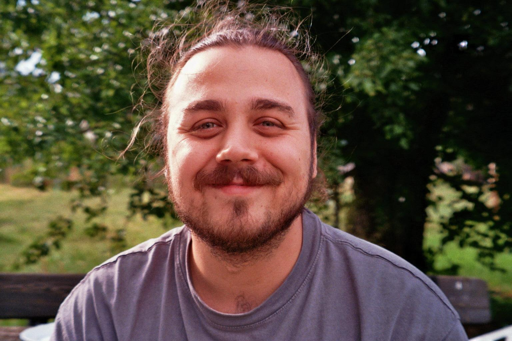
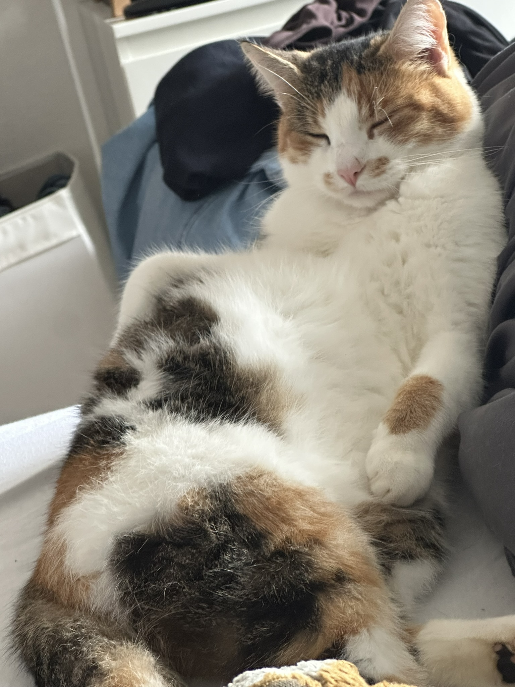
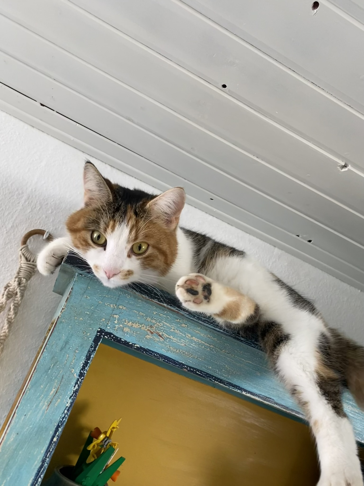
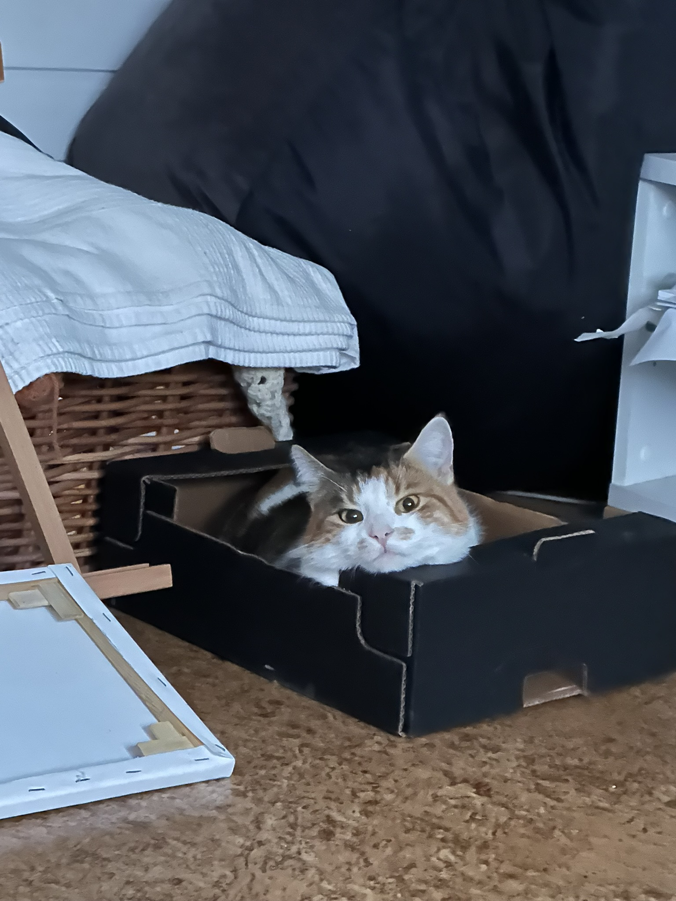

Über mich
Hi, ich bin Louis! Ich bin 27 Jahre alt und befinde mich derzeit in einer überbetrieblichen Umschulung zum Fachinformatiker für Anwendungsentwicklung. Ich komme aus Reutlingen, dem Tor zur schwäbischen Alb. Hier bin ich geboren und aufgewachsen.

Meine Interessen
Ich bin leidenschaftlicher Informatiker, während der Arbeit, sowie in meiner Freizeit. Abgesehen davon spiele ich für mein leben gerne Videospiele, schaue Filme oder Serien. Bücher lese ich auch gerne wobei mein Fokus auf Fantasy liegt. Bin ich nicht mit programmieren, gamen oder lesen beschäftigt, Häkel ich. Derzeit arbeite ich an einer Decke. Immer mit dabei ist mein Kätzchen. Sie heißt Nille. Wenn Sie nicht draußen am spielen ist, begleitet Sie mich durch meinen Alltag.
Nille
Nille liegt nicht nur gerne in lustigen Positionen.
Sie liebt es auch weit oben zu sein oder sich in die kleinsten Kisten zu quetschenWenn Sie nicht draußen am spielen ist, begleitet Sie micht gerne durch meinen Alltag.



Meine Fähigkeiten
Während meiner Umschulung habe ich bereits viele Fähigkeiten erlernt. Dazu gehören unter anderem:
- Programmierung in Sprachen wie Python und JavaScript
- Datenbankmanagement und SQL
- Webentwicklung (HTML, CSS, JavaScript)
- Softwareentwicklung und -design
- Fehlerbehebung und Debugging
Noch bin ich kein Experte, lerne aber jeden Tag mehr dazu.